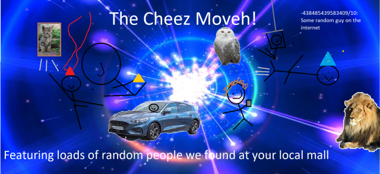
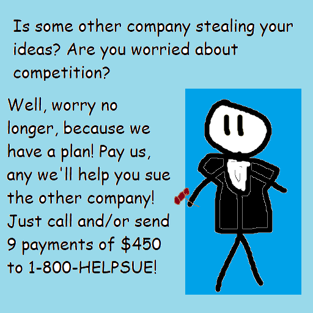

Episode 33: October 3rd, 2019
Back to News Archive
| Back to Homepage | Back to Shef Werld<< Previous Episode | >> Next Episode

"Untitled News Report"
$5.00 | ~8 ghost dollars | ⭐25 coins
Does not include potential cost from surprise mechanics (they're not lootboxes so it's not illegal!!!), purchases from Shef Kerbi's Apparel or preordering the Special Edition
-------------------------
GREAT GHOSTLY NEWS
Dreemtronix ghosts have been unable to stock the ghost electronics store as planned due to the owner "going on a journey for a ghost fone." Dreemtronix ghosts have tried sending a ghost letter to tell the ghost electronics store owner to come back, but have unable to get past the Riddle of the Great Mountain Snail™ from the Great Mountain Snail on the Great Mountain. Dreemtronix riddle experts have been deciphering it for days to no avail. If anyone at home can figure it out, please send us the answer.
...What do you mean 'Riddle of the Great Mountain Snail™?'"

TOAD ESCAPED FROM PRISON!!!
Just a few hours ago, a toad escaped from prison after finding a spoon under his bed. Using the spoon, he escaped prison. "The spoon has magical powers, it could teleport you anywhere." one of the guards explained. "This toad had used it to escape from prison. One of our fellow guards accidentally left it in there. We will be firing him after I finish this interview." We asked the guard what crime the toad did to get himself in prison, what he said was shocking, so shocking that unfortunately we are not allowed to share. If you live near the Dreem Lend area, be aware of this criminal, for he may come into your home and take your Nintendo Switch.

"Sandwiches? I'll take a bite," Ghost Manta Says
The grand opening of the cool sandwich building in the area of the intersection of Broadway and King Street in Burlington has been postponed once again due to a giant manta ray silhouette appearing in front of it and covering the area with electric toothpaste. Although the Dreem Lend government has been assigning all of their Pianta janitors to clean up the area, their efforts have so far proven futile, due to most of their budget already having been spent trying to rescue people from Ted's house. Unfortunately, FLUDD is dead, and for some reason you can't revive robots. We have obtained an image of the area:

APPLE'S TECHNOLOGY AND DESIGN CORNER: Episode 5
YouTube has just unveiled their latest controversial update. That's right, YouTube has just removed the feature to view and upload videos. The team at YouTube claims that this feature will help create a more positive environment on the site. In response to this, Reddit and Imgur are planning to remove their posting features as well. Although general reception of this update has been mostly negative, YouTube stands by their choice, stating that their databases have already been thrown of the roof of their building.
In other news, a tech reviewer has just discovered that you can make your iPhone shinier by pouring water on it.
NEW DREEMTRONIX TECH OUT
Dreemtronix has released both the DreemBook and the SuperPhone 2 Ghost Edition (a ghost version of the SuperPhone 2 which is for ghosts and the successor to Ghost Fone 2). Both of them still support nearly every feature in the SuperPhone 2.
Both products have been enjoyed by critics.
Due to this, the original Ghost Fone has stopped manufacturing this bulletin, and Ghost Fone Toos will no longer be manufactured after the next bulletin.
SCIENCE NEWS
Professor Linda Muncher of Dreem Lend University decided to recruit the ghost of Professor Gourd-Oh for her team's ongoing research of whether or not ghosts can feel pain. Professor Gourd-Oh politely declined the offer, but the team hired him anyway. We believe it's very kind of the team to allow Gourd-Oh to continue his research after his death. What do you know, he might even find out something new about himself!
Now I don't wanna give my own opionion but...
OPIONION WITH SHEF KERBI
Hey Shef Kerbi I saw that the Shef Werld Scratch Page changed their profile picture to Snivy let's get literally everyone to point that out lol
So we told you Shef Kerbi News Network fans on our Scratch page that you could post anything with the #SKNN hashtag and you could end up in our paper! In this episode, we'll respond to some of your feedback with the new SKNN format, as well as show some of your cool stuff!
We began this issue's section with a post from speedslinger:
"the funny wood fired pizza thing"
Original comment
how'll pizza get a job now?
Grammar Person wrote:
"Please ignore the previous comment by Geography Person. Clearly it should read "Ohio's not on Popp Stah", as Popp Stah is a planet, not a country or continent.
Although yeah Ohio's not on Popp Stah, you might have a problem with that news generation machine thing."
The New News Generation Machien is never wrong though. Why would it be wrong?
A Certified Random Stick Figure wrote:
"how do make stick figure draw"
To make a stick figure draw, just give your stick figure a pencil. They might draw a water gun or a shield or something to protect/attack you, but that's not unusual behavior.
Carmes wrote:
"Fun fact: there are over 2,500 flavours of Emoji Bars, including ones that aren’t really edible (such as diamond and envelope flavours) (and yes I use British English)"
Is it possible that we could get a full list of Emoji Bar flavo(u)rs? I'd like to have an option for people to select what sort of emoji bar flavo(u)r they want.
YeetyMcYeet wrote:
"yeet"

...
Carmes (again) wrote:
TWO BATMANS?!
Which one's the real Batman though?
If you would like to submit your own opionion for Shef Kerbi, just go to our social media, on Twitter, Instagram or Scratch.
But prefably Scratch because that's what everyone uses
----------------
JOHJ THE GAME BREAK NEWZ
i am sad at sdreem klend nsocer ntem they never play the good games like call of dhty and only play bad ugly socer so profesonal and man man like john gameman not have news to repoert!!!! nomore!! john gameman profesonal game and man man will be makeing new thing called how to do things which john gameman profesonal ame and man man will tel you how to do by jogn gameman profesonel game and man man it is good series and john gameman profesonal game and man man will be takeing what you aesc and answaring that to first thing for new john gameman profesonal game and man man thing is how johngameman give aple the cat a hig five
i do not kno sore..........

RAKING NEWS
(haha get it because it has to do with cleaning stuff and that's what you do with a rake except not really)
Breumhatta has recently opened his new service "Insta-Clean (but not clocks)", where he walks into your house and it becomes clean (except the clocks). Some people are a little suspicious of this because that sounds like magic and some people don't like magic for whatever reason. Breumhatta denies any connection to the service being magic, saying that he's just figured out a way to make dust scared of him so it runs away, except for clock dust because clock dust is kind of annoying like that. He also denies being a witch, and says that whoever saw him with all those other witches probably just misremembered. He hasn't commented on the pictures of him with all the other witches that we have.
BREAKING SWITCH NEWS
Recently, Nintendo has unveiled their latest console, the Nintendo NX featuring an oval shaped controller. "It's hard to stop leaks," says a Nintendo representative, "Which is why we created an entire false Nintendo console called the 'Switch' with fake games and pretended it was the Nintendo NX in order to fool people." The new Nintendo NX is said to include games such as "Wario's Illegal Gambling Ring," "Kirby Surpasses The Speed Limit," and "The Legend Of Zelda: The Milk Of Spoiled." Every Switch in the world has responded to the jig being up by self destructing.
COMIX
by Apple the Cat and Keynsun DDDO
Candy Sadness #17

Keynsun DDDO - Ghost Hobo Dog

SCRAPPED CONTENT
not really this time but anyway
On SKNN Issue #25, we released a news article where we said that
We were actually incorrect in this case, as this news report from SKNN Issue #22 contains an animated segment:
BRAKING NOOS
by Bon Starbuckle (edited by Shef Kerbi)
Bon Starbuckle Sues Fellow Cartoonist Reali For A Bajillion Shef Kerbi Dollars Over 'Garfeld' Character
"this garfeld is clearly based off of my original character gornfeld". "i say copyright infringement"
actually it's based off garfild not gornfeld plus it's parody which is fair use so H A
(nope its obviously based off of gornfeld)

We are currently searching to see what animated newspaper technology was like back then and if there were any cases before of animated newspaper elements in SKNN.
ACTIVITY ANSWERS
written by Apple the Cat
Wires:

Integers:
Numbers 18 - 22
WEATHER
written by Zeke Teddy
Today will be clear weather, pretty nice, bit windy though. Min of 14, max of 25.
Tomorrow's weather will be partly cloudy in the morning, although it might clear up later. Or it might not. You never know. Min 13, max 25.
THANK YOU FOR WATCH. PLEASE TUN E IN NEXT TIME FOR MORE NESW

Shef Kerbi News Network follows the guidelines and conventions set by the 1984 High Quality News Act of Dreem Lend, which states
that any news published is to be of a high quality, is to remain unbiased and to show all sides of a news report, does not attack anyone, and protects the privacy
of people whose identities don't want to be revealed.
If you would like to file a complaint regarding content use, please message SKNN through our Scratch account. We also have a Twitter and Instagram account if you
prefer.
Shef Kerbi News Network respects the ancestors of Cappy Town, and understands that they are the reason why Dreem Lend exists.
Shef Kerbi News Network is proud to be a subsidiary of Shef Werld
this website is best viewed with Ned's Escape